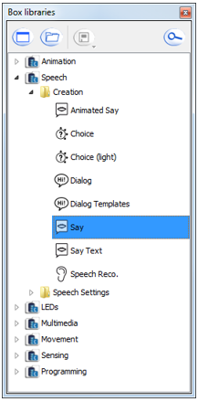
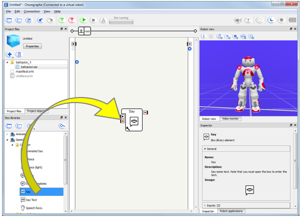
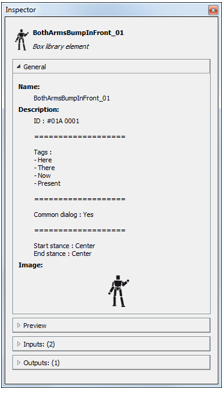
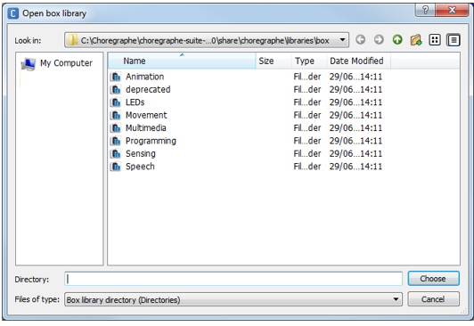
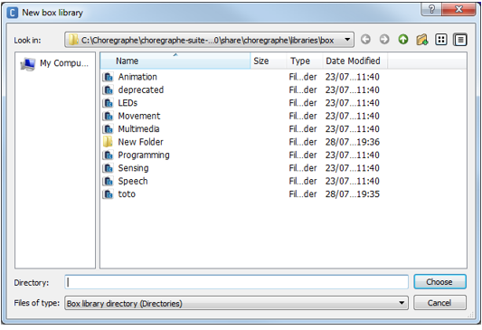
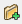
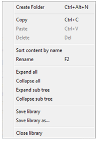
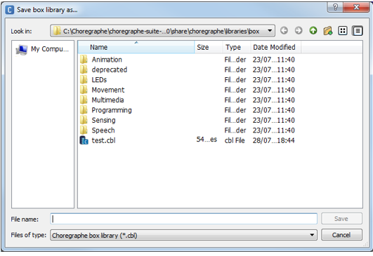
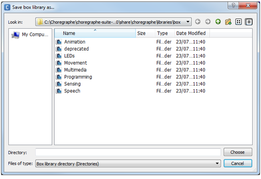

Box libraries panel¶
Box libraries panel¶
The Box libraries panel displays the currently opened Box libraries:
{kind=link}
Toolbar¶
| Button | Click on this button to ... |
|---|---|
Create a new Box library. For further details, see: Creating a Box library. |
|
Open an existing Box library. For further details, see: Opening a Box library. |
|
| Save Box libraries. | |
 |
Search a specific box among all the opened box libraries. |
How to use the Box library panel¶
You can drag and drop any of the boxes contained in a Box library onto the Flow diagram panel to enrich a Behavior or a Box.
{kind=link}
Box library¶
{kind=link}
A box library consists of a list of Boxes.
This list can be organized with directories.
Each box may have attached files (music, image, etc) also included in the box library.
A box library is particularly useful when you often use the same boxes. You can store it in a box library and use and reuse it later.
Default Box libraries¶
Opened by default, and read-only box libraries:
- Animation,
- Speech,
- LEDs,
- Multimedia,
- Movement,
- Sensing,
- Programming.
Also available:
- deprecated: lets you know which boxes has been deprecated since the last release.
Box library available formats¶
You can save / open a Box library as:
- a single compressed file with a CBL extension (ex: MyLibrary.cbl). The box library CBL format is an easy way to archive a box library and / or release it to someone else.
- a directory. The box library directory format is a very useful way for collaborative / versioned project whose can be modified and extended by many people.
Note
For further details about saving a project as a CRG file or as a directory, see Saving a box library as a .cbl file and Saving a box library as a directory.
In versions older than 1.10, box library files were not compressed (the extension was XAL).
Getting information on a Box¶
Thanks to the Inspector panel, you can see information about any specific box in the Box Library.
When a Box is selected, the inspector displays the:
|
 |
Managing Box libraries¶
Opening a Box library¶
| Step | Action |
|---|---|
Click the Open box library button.  |
|
Select the relevant file type:
For further details, see: Box library available formats. |
|
| Select the Box library to open. | |
| Click Choose to validate your choice. |
{kind=link}
Creating a Box library¶
To create your own Box library:
| Step | Action |
|---|---|
Click the New box library button. The “New box library” windows appears:  |
|
| Make sure the file type is Box library directory (Directories). | |
Make sure you have an empty folder and select it. Tip: if no empty folder is available, create one using the  Create new folder button. |
|
| Click Choose to validate your choice. |
{kind=link}
Customizing a Box library¶
To add boxes:
| From ... | Do ... |
|---|---|
| the Flow diagram | Select the box and choose Add to library in the contextual menu. |
| a box library | Copy/paste the box using the contextual menu. |
To edit and save the content of the customized Box library, use the contextual menu:
{kind=link}
To automatically open your own box libraries at Choregraphe startup:
| Step | Action |
|---|---|
| Choose Edit > Preferences. | |
Choose the box libraries you want to be opened in the field User’s box libraries. For further details, see: Choregraphe preferences. |
Saving a box library as a .cbl file¶
| Step | Action |
|---|---|
Choose Save library as... in the contextual menu. The “Save box library as...” windows appears:  |
|
| Make sure the file type is Choregraphe box library (*.cbl). | |
| Browse the destination path and complete the “File name” field. | |
| Click Save to validate your choice. |
{kind=link}
Saving a box library as a directory¶
| Step | Action |
|---|---|
Choose Save library as... in the contextual menu. The “Save box library as...” windows appears:  |
|
| Make sure the file type is Box library directory (Directories). | |
| Make sure you have an empty folder and select it. | |
| Click Choose to validate your choice. |
{kind=link}